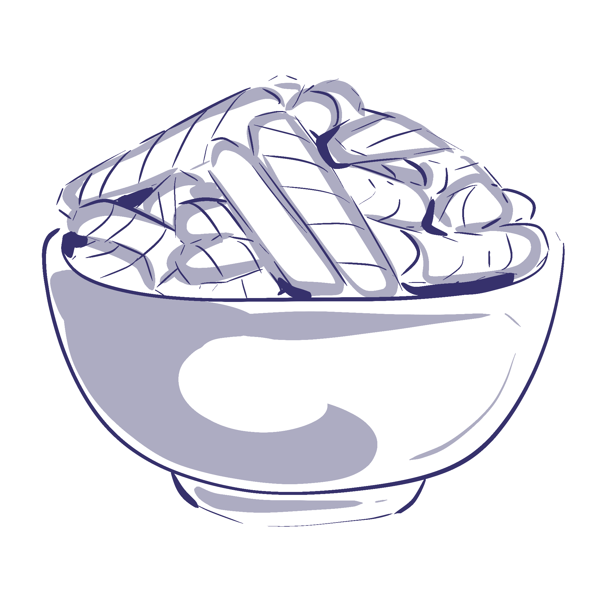
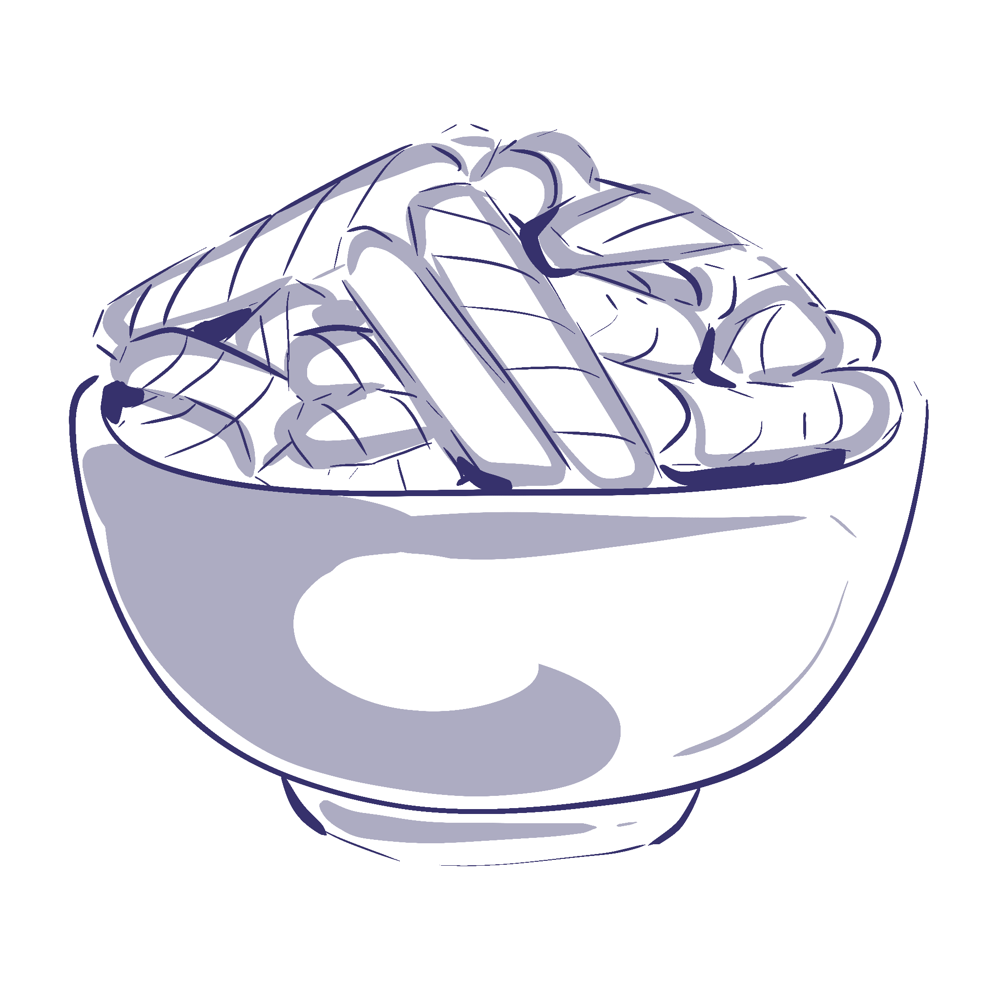
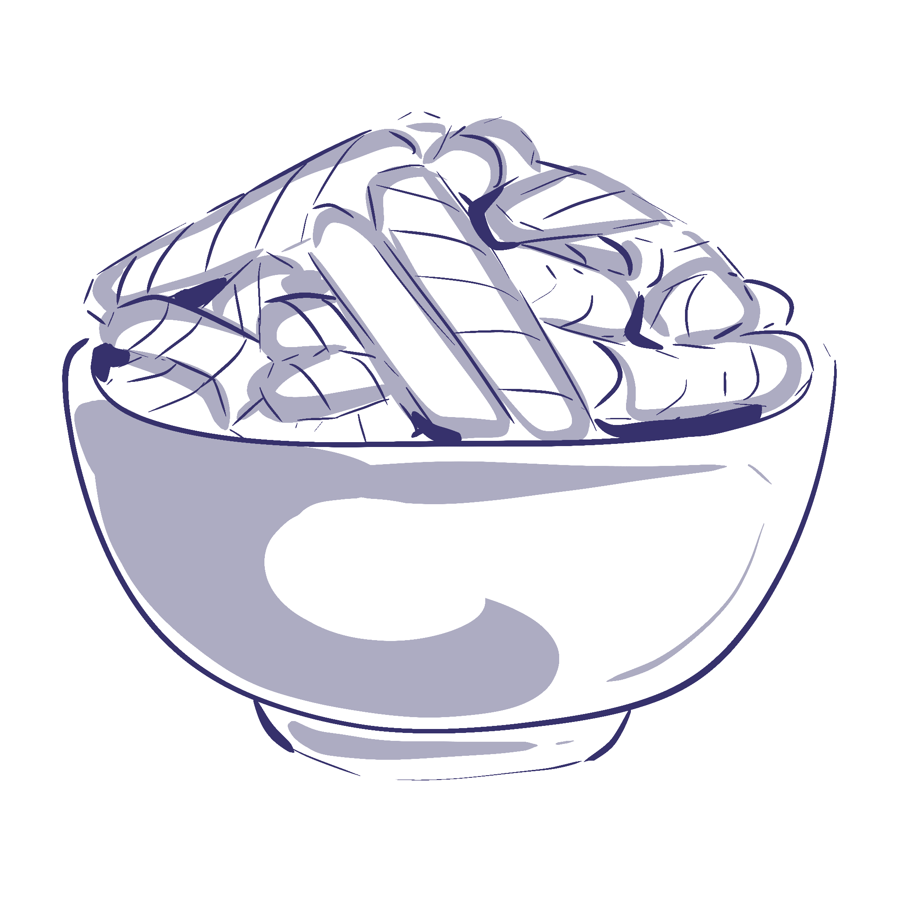
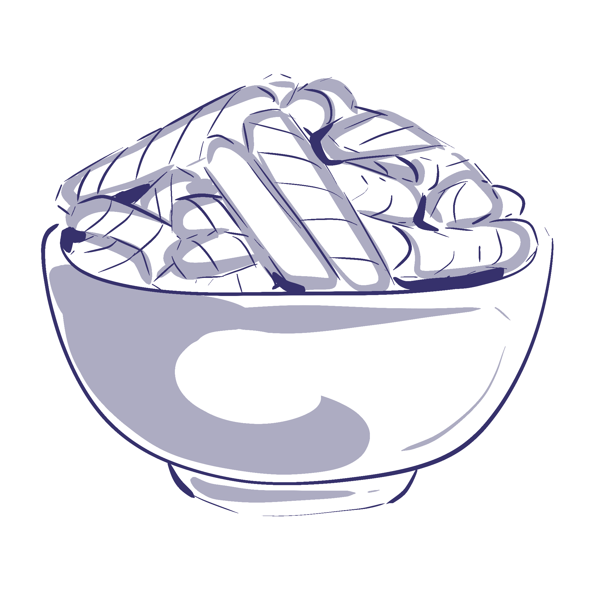

the secrets of shrimp crackers
 



Enriched Wheat Flour,
Seasoned Oil,
Corn
Starch,
Ground Shrimp,
Modified Tapioca Starch,
Sugars,
Salt,
Mushroom Extract Powder,
Kelp Extract Powder,
Onion Powder,
Garlic Powder,
Black Pepper
One of the most popular brands of shrimp crackers/chips is the Calbee brand.
1. Chop prepped shrimp. If frozen, defrost and remove excess moisture with paper towels.
2. Combine shrimp with seasoning and water in a blender. Puree the mixture until smooth.
3. Mix shrimp paste in a bowl with tapioca starch. Knead for about five minutes until you have a smooth dough (it should not be sticky).
4. Form the dough into a log, split it into six pieces, and boil for about 35 minutes.
5. Allow the cooked pieces to dry in the fridge overnight.
6. Then, slice thinly and place slices in a single layer on a cooling rack. Allow them to sit in sunlight for two days or until they are fully dried/have a crispy texture.
7. Store your homemade shrimp chips in an airtight container or bag for up to six months. Ensure you keep them in a cool, dry location.
1. Put the prawns in a food processor and pulse for a few moments until they become a paste. Add the remaining dough ingredients, apart from the water, and pulse for a minute or so until you have a very fine sandy texture.
2. Add 50ml water and pulse until you get a thick dough, adding a little more water if necessary: after a few moments of pulsing, the dough will start to come together to form a ball.
3. Turn the dough onto the work surface and knead the dough for a few moments until smooth. Roll into a fat cylinder.
4. Wrap the dough cylinder tightly in cling film. Steam for an hour before cooling and then chilling for several hours or overnight, still wrapped in the cling film.
5. Cut thin slices from the dough using a sharp knife, cutting to about 1-2mm thick. Alternatively, use a vegetable peeler along its length to give ribbons.
6. Dry the slices in a dehydrator set to 60°C for 4-5 hours or until fully dry: alternatively, place them on baking trays lined with parchment and pop in the oven set to 50°C (fan oven).
7. To deep-fry them, heat the oil to 190°C and drop several at a time into the hot oil for about 1 minute until puffed up, giving them a turn part-way through.